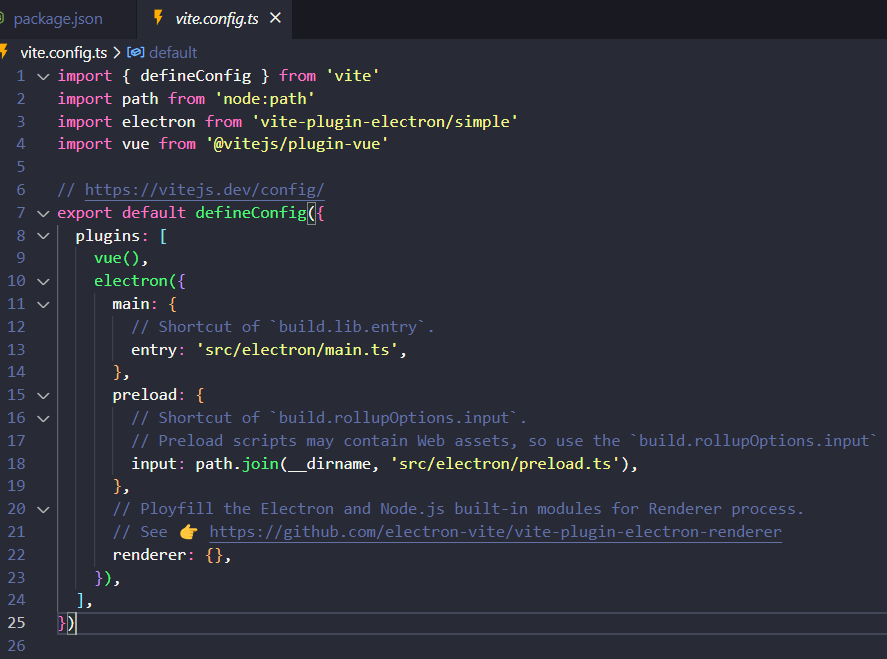

electron-vite-vue开发指北
1. 准备nodejs环境
-
set up nvm via Releases · coreybutler/nvm-windows (github.com)
-
config mirror
#设置npm_mirror: nvm npm_mirror https://npmmirror.com/mirrors/npm/ #设置node_mirror: nvm node_mirror https://npmmirror.com/mirrors/node/ -
install nodejs @Previous Releases | Node.js (nodejs.org)
nvm uninstall 10.13.0 # 删掉低版本的 10.13.0 nvm list available# check nodejs available @ nvm install 14.21.3 # version 16.XX nvm install lts #最新的 LTS 版本 nvm install latest # 安装最新版本的 Node.js，也就是 Current 版本： -
use nodejs
nvm list # 已安装管理的 node 版本； nvm use 14.21.3 #!!!switch version -
修改源：
-
安装
nrm：npm i nrm -g # 安装源管理工具 nrm ls aviable # 列出可用源 nrm use taobao # 切换taobao~
-
-
设置ELECTRON_MIRROR加速发布包下载
# win系统可以设置`ELECTRON_MIRROR`全局变量[]，名称为ELECTRON_MIRROR，值为：http://npm.taobao.org/mirrors/electron/ 。 # 其他：使用命令行修改 npm config set registry https://registry.npm.taobao.org/ # 等价于nrm use taobao npm config set ELECTRON_MIRROR http://npm.taobao.org/mirrors/electron/ # https://cdn.npm.taobao.org/dist/electron/
2 起飞
-
初始化工程，参考：Getting Started | Electron⚡️Vite (electron-vite.github.io)
#重要！使用系统SHELL安装并执行命令！ npm create vite@latest electron-vite-app # 初始化vite npm install --save-dev @electron-forge/cli # 安装forge打包工具 npx electron-forge import # 初始化
-
修改源码，打包(dist文件得build之后再运行)：
npm run dev # 开发模式预览！ npm run build # 生成dist目录，dist-electron目录, npm run make # 打包electron-vite-app\out\make\squirrel.windows\x64\electron-vite-app-28.0.0 Setup -
安装（位置目录在：
C:\Users\xxx\AppData\Local\electron_vite_app\app-0.0.0\electron-vite-app.exe)
参考文献：